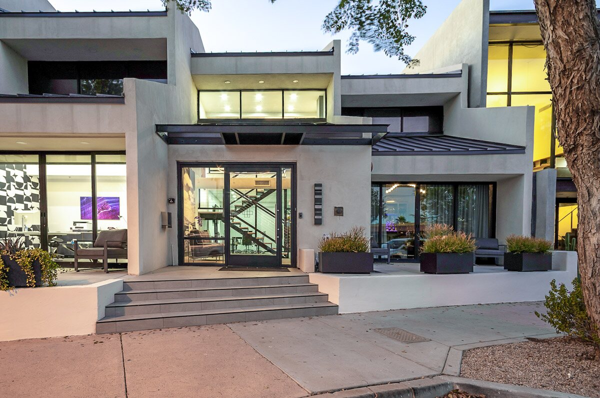
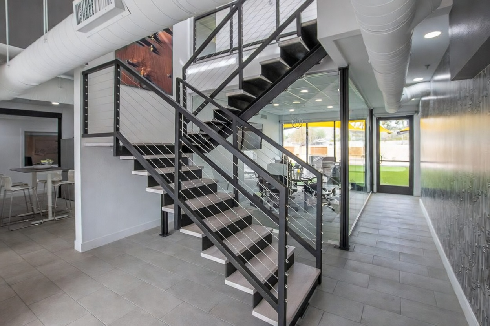
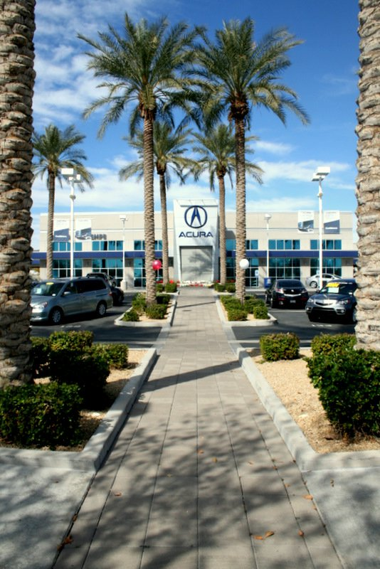

“The brand is a book. Every page the firm publishes is a page of it.”
A monograph,
not a website.
Mullin Development does not present itself the way developers usually do — with glass towers, gradients, and superlatives. It presents itself the way an institution does: as a record. The identity is organized as a monograph — the firm’s book — with numbered chapters, full-bleed photographic plates, data set as a ruled ledger, and a green seal applied sparingly, the way a publisher stamps a spine.
This organizing idea decides everything downstream. Chapters give pages their structure. Hairline rules — not cards or boxes — give them their skeleton. Serif display type carries the gravity; a quiet sans carries the reading; a mono register carries the metadata. Paper and night are the only two grounds. Green is never decoration. Negative space is the luxury.
When a question of design arises that this volume does not answer, answer it the way a book would.
Four commitments, everywhere.
-
01
Chapters
Content is numbered and named — 01, 02, 03 — each chapter opened by a full-width rule and a mono index. A page is a sequence, not a pile of sections.
-
02
Plates
Photography appears as full-bleed plates between chapters — treated, captioned, and numbered. Never galleries, never carousels, never decoration.
-
03
Ledgers
Data is set in ruled rows with mono labels and serif figures. Thirty years and $1.6B need no infographic; the ledger is the infographic.
-
04
The seal
Green is applied like a seal on a document — the index, the key figure, the quotation mark, the one invitation. If green starts to feel like a theme, remove some.
The seal of facts Scottsdale, Arizona · Est. 1994 · founded by Art & Jim Mullin · 6910 E 5th Ave, Scottsdale, AZ 85251. These are the only numbers the brand speaks with. Do not invent others.

One mark, five impressions.
An M drawn as three towers, above a wide-tracked wordmark. There is one mark; what changes is the ink it is struck in — bone for night and photography, ink for paper, green when it acts as the seal itself.


Mullin Development
Below minimum size, the mark retires
Clear space & minimums.
The mark holds a margin of x on all sides — x being the height of the towers. Nothing enters that margin: no type, no rules, no photography incident. Below its minimum size a lockup is not shrunk further; it is replaced by the firm’s name set in the mono register.
The mark is never —
Recolored. It exists in bone, ink, and seal green. No other ink is struck.
Set green on night. The seal belongs to paper. On night, the mark is bone — always.
Placed on an untreated photograph. A night scrim first (Chapter 08); then bone.
Redrawn, stretched, rotated, outlined, shadowed, or boxed. The mark is flat ink on a ground.
Crowded. Neighboring marks or type sit beyond the x-margin, separated by a hairline.
Shrunk past its minimum. Below 24 px, retire the mark and set the name in the register.
Paper, ink, and a seal.
The palette is a printer’s, not a painter’s: two grounds, two inks with their tints, and one green struck like sealing wax. Click any swatch to copy its value.
The paper side — grounds & ink
The night side
The seal
The hairlines.
Structure is drawn, never boxed. Rules are one pixel, and their weight is carried by opacity, not thickness.
The discipline of green.
Green is a seal, not a theme. On any screen it appears a handful of times — the chapter index, a figure’s footnote, the quotation marks of a statement, a hover, the single sealed button. It fills a surface in exactly two sanctioned moments: the hover of .btn-seal, and the text selection. Select this sentence and the page will show you the second.
On night grounds, #0E6133 disappears — 2.5:1 against night, illegible by any standard. That is why green‑lift exists. The rule is absolute: seal green on paper, green‑lift on night, never the reverse, and never green as wallpaper. If a layout feels like it needs more green, it needs less.
The two grounds, paired.
Night is not a “dark mode” — it is the same page printed on different stock. Every voice has its equivalent: ink becomes bone, ink‑55 becomes bone‑45, green becomes green‑lift, line becomes nline. The composition does not change; only the ink does.
The same page, day.
Ink on paper. Rules at 16%. The seal in full green — #0E6133 reads at 6.7:1 here.
Ink · Ink-55 · Green · LineThe same page, night.
Bone on night. Rules at 14%. The seal lifts to #7FA98E — 7.2:1 where full green would vanish.
Bone · Bone-45 · Green-lift · NlineThe contrast ledger.
Measured, not assumed. WCAG 2.1 ratios for every sanctioned pairing — including the one that fails, kept here as the standing argument for green‑lift.
#151A15 / #F4F1EA15.6 : 1AAA — all textbody copy6.6 : 1AA — all textlabels & metadata3.9 : 1Large type & labels only#0E6133 / #F4F1EA6.7 : 1AA — all texthover ink9.2 : 1AAA — all text.btn-seal hover7.6 : 1AA — all text#F4F1EA / #0C120D16.8 : 1AAA — all textbody copy9.0 : 1AAA — all text#7FA98E / #0C120D7.2 : 1AA — all textthe forbidden pair2.5 : 1Fails — never setThree voices, one page.
Cormorant Garamond carries all the gravity — large, patient, lightly tracked-in. DM Sans at 300 does the reading. IBM Plex Mono keeps the record: labels, indices, coordinates, always uppercase, always wide. No fourth voice is ever added.
S.01The Display
Cormorant Garamond 500
clamp(3.3rem, 9.2vw, 8.4rem)
Line 1.02 · Track −0.015em
Covers & heroes only — one per page
With Purpose.
S.02The Chapter Display
Cormorant Garamond 500
clamp(2.4rem, 5vw, 4.6rem)
Line 1.06 · Track −0.01em
The h2 of every chapter
Selected work.
S.03The Statement
Cormorant Garamond 400
clamp(2rem, 4.4vw, 4rem)
Line 1.2 · Max 27ch
Hanging quote: text-indent −0.42em
“Committed to impacting communities through innovative development.”
S.04The Verb
Cormorant Garamond 400 italic
clamp(2.2rem, 4.6vw, 4.2rem)
Line 1 · The litany voice
Develop
S.05The Name
Cormorant Garamond 500
clamp(1.9rem, 3vw, 3rem)
Line 1.05 · Projects & people
Scottsdale Autoshow
S.06The Figure
Cormorant Garamond 500
clamp(2.3rem, 3.6vw, 3.5rem)
Lining numerals · seal on the unit
$1.6B · 1,200+
S.07The Subhead
Cormorant Garamond 500
clamp(1.55rem, 2.1vw, 2.1rem)
Line 1.25 · Section heads
Rooted in the Southwest.
Built for the nation.
S.08The Text
DM Sans 300 · 16px / 1.75
Ink‑70 · Max 56ch
Small variant 0.94rem for asides
Mullin Development was founded in Scottsdale in 1994 by father and son Art and Jim Mullin. Over three decades, the firm has grown from its desert roots into a national practice.
S.09The Register
IBM Plex Mono 400 · 0.66rem
Track 0.18–0.22em · Uppercase
Tabular numerals
Scottsdale, Arizona — Est. 1994 · 33.49° N · 111.93° W
S.10The Index
IBM Plex Mono 500 · 0.72rem
Track 0.14em · Seal green
Chapter & row numerals
01 02 03 04 05 06 07 08 09 10
Fluid sizing, one formula.
Every display size is a clamp — a floor for the phone, a viewport-tracking middle, a ceiling for the studio display. Type is never resized by breakpoint; it breathes with the page.
font-size: clamp(3.3rem,9.2vw,8.4rem)
The small laws.
Italic is meaning, not decoration. One italic em per composition — the turned word of the thought: Purpose. together. work.
Weights are fixed. Serif 500 (display) and 400 (statements, italics); sans 300 (reading), 400–500 only inside interface moments; mono 400, 500 for indices.
Display tightens as it grows. −0.005em at statement size, −0.015em at cover size. The register spreads instead: 0.18–0.22em, always uppercase.
Punctuation hangs. Opening quotes overhang the margin (text-indent −0.42em) and are struck in the seal. Em-dashes, real quotes, non-breaking spaces before short last words.
Numerals know their column. Tabular in the register and every ledger; lining in serif figures. A ledger that wobbles is a ledger misset.
Negative space is the luxury.
Density reads small; space reads institutional. The page spends emptiness the way the firm spends land — deliberately, and at scale.
Two tokens govern the entire rhythm. The gutter holds every left and right margin — one value, fluid, from phone to studio wall. The chapter gap separates chapters vertically and scales with the height of the window, so a chapter always arrives with air above it.
Live Measured against this window, now. Resize it and the rhythm follows — no breakpoints involved.
The ruled skeleton.
The rule is the only container. Chapters open with a full-width rule at 100% ink; everything inside is separated by hairlines at 16% and 9%. Nothing is boxed, nothing is rounded, nothing casts a shadow. When a region must read as a surface, the ground shifts to Paper‑2 or Night‑2 — a change of stock, not a card.
Grids are content-led: the ledger is four columns, the editorial plate is 7.2 : 4.8, people are three columns ending in a portrait. Columns collapse at 1100, 900, and 640 pixels — and the gutter never changes.

The working library.
Every part below is live — real CSS, real content, the same classes the site ships with. Nothing here is an illustration of a component; it is the component.
Fig. 6.1The chapter bar
Use Opens every chapter — full-width rule at 100% ink, sealed index, tracked label, position marker right. Never appears mid-section; nothing but the nav ever sits above it.
Fig. 6.2The statement
“Committed to impacting communities through innovative development, dedicated people, and loyal relationships.”
Use One per page: the chapter’s single idea, set as a hanging quotation with sealed quote marks. If a page wants two statements, it is two pages.
Fig. 6.3The figures ledger
Use Primary firm data — four figures at most, serif numerals, mono labels, the unit or sign struck in the seal. Never charts, never icons.
Fig. 6.4The editorial plate — wplate
Scottsdale Autoshow
A 70-acre automotive development on the Salt River Pima–Maricopa Indian Community.
Use One project, one image, one measure of scale. Alternate the image column left and right (class .flip) down the page. The scale slot takes a serif numeral or an italic status — never both.
Fig. 6.5The record — index table
Use The complete index of anything — dense, ruled, tabular. Rows are links; the arrow earns its place only on hover. On small screens the program column retires first.
Fig. 6.6The method list — on night
Site Selection & Research
Rigorous market analysis identifying development opportunities with long-term viability.
Development & Construction
End-to-end management, from entitlement through construction completion.
Use Numbered process — decimal-leading-zero counters in green-lift, serif heads, quiet body. The night ground is its home; on paper, the counters take the seal.
Fig. 6.7The litany
-
01
Develop
A different approach to crafting developments — high-quality properties that create value for stakeholders and neighboring communities alike.
-
06
Give
We align our work with clients we can give back to — every engagement creates value beyond the transaction.
Use Verbs as liturgy — italic serif, one line each, a numbered rule per verb. Reserved for the firm’s beliefs; never used for features or services.
Fig. 6.8The people row
-
Jim Mullin
President
Past President of Staubach AutoGroup. Involved in more than 1,200 automotive retail locations and forty-plus developments across four continents.
Use A person is a row, not a card — name and sealed title left, biography center, portrait right at 172 × 216. Portraits are treated like every other photograph (Chapter 08).
Fig. 6.9The ventures row
Use Outbound holdings and sister companies. The northeast arrow ↗ always means “leaves this site” — nowhere else is it used.
Fig. 6.10Links & the sealed button
Use The underlined mono link (.lnk) is the workhorse; its arrow travels on hover. The sealed button (.btn-seal) is the page’s one invitation — one per page, hairline border, filling green only on hover. Two buttons on a page means one of them is a link.
Fig. 6.11The nav — two states
Use Over imagery the nav is transparent with a soft top gradient and the bone lockup. Once scrolled past the hero it turns solid paper — blurred at 94% opacity, ink lockup, tightened padding. The swap is a cross-fade, never a jump. Links underline on hover, drawn left to right.
Fig. 6.12The colophon
Every page closes the same way: the night ground, the full white lockup, the italic tagline, ruled columns of navigation, the office address with its coordinates in the register, and a baseline rule carrying the copyright. The footer of this document — below — is the live specimen.
Use Identical on every page of the site. The colophon is the one component never redesigned per page.
Engineered calm.
One easing curve moves everything the brand owns. Half of any travel is over in the first tenth of its duration; the remaining nine-tenths are deceleration. Nothing bounces. Nothing spins.
Fig. 7.1 — the signature ease, cubic-bezier(0.19, 1, 0.22, 1). Both control points sit at full progress: motion arrives almost immediately, then spends its time settling. There is no second curve.
One curve. Every transition and animation uses the signature ease. No ease-in-out, no springs, no bounces.
Short distances. Reveals travel 26px. Images scale by at most 7%. Plates drift ±5% in parallax. Motion is felt, not watched.
Once. Reveals fire a single time and rest. Nothing loops, pulses, or waits to be noticed.
Reduced motion is a designed state. Under prefers-reduced-motion, everything sits at its final position — the page is complete, not broken.
Fig. 7.2The reveal, live
Strategic. Intentional. Long‑term.
Each element rises 26 pixels over one second, staggered by 120 milliseconds — the exact choreography of every chapter on the site.
Motion is at rest — reduced motion is on.
One darkroom for every photograph.
Source photography arrives from decades of projects, cameras, and light. A single treatment prints them all on the same stock: desaturated, slightly firmed, warmed a breath toward the paper.
/* the treatment — applied to every photograph */ filter: saturate(0.82–0.88) contrast(1.03–1.05) sepia(0.05); /* the scrim — before type or marks sit on a photograph */ background: linear-gradient(to top, rgba(10,15,11,0.42), rgba(10,15,11,0.05) 45%); /* the hero scrim — covers only: radial vignette + top and bottom shafts */ background: radial-gradient(ellipse 120% 90% at 50% 58%, rgba(8,13,9,0.52), rgba(8,13,9,0.14) 72%), linear-gradient(to top, rgba(8,13,9,0.78), transparent 45%), linear-gradient(to bottom, rgba(8,13,9,0.5), transparent 22%); /* the paper grain — fixed overlay on every page, 5% opacity */ SVG fractal noise · 140 × 140 · base frequency 0.9 · two octaves
The plate, assembled.
Treatment, scrim, and caption together. Plates are numbered in sequence per page and captioned in the register — subject first, place second. The image drifts ±5% as the reader passes; the caption does not move.

Crop for monumentality.
Land is the subject. A 40-to-100-acre site is photographed like landform: horizons kept low, mid-distance held, wide aspect ratios (1.85:1 in editorial plates). Never fisheye, never drone-spiral.
Dusk over noon. Where a choice exists, choose the hour when buildings glow and the sky holds the site — it meets the night ground halfway.
People appear incidentally. The firm photographs places; portraits belong to the people rows, at 172 × 216, treated like every other photograph.
Every image is captioned in the code. Alt text is written like a plate caption — subject, place, time of day. An image without alt text does not ship.
Say it once, plainly.
The firm writes the way it builds — spare, declarative, long-term. The tagline is Developing with Purpose. — always with its period, never reworded, its one italic earned.
Numbers carry the weight. “1,200+ sites” needs no adjective. If a sentence leans on world-class, exciting, or an exclamation mark, the sentence is rebuilt. The firm has never used an exclamation mark.
The definite article. Chapters are institutions: The Firm, The Work, The Method, The Purpose, The People. Verbs head the litany: Develop, Plan, Build, Consult, Partner, Give.
Present tense, long horizon. “Strategic rather than transactional” — the voice states positions, it does not campaign. Claims are dated, placed, and sourced from the seal of facts.
Real typography in every sentence. Em-dashes — like this — for the turn of thought. Real quotation marks. Non-breaking spaces guard short last words. Ampersands only in the register.
Write / never.
Write
A 70-acre automotive development on the Salt River Pima–Maricopa Indian Community.
Scale, program, and place. The fact is the persuasion.
Never
An exciting, world-class 70-acre auto mall experience!
Three adjectives, an exclamation mark, and less information.
Write
Est. 1994 — Scottsdale, Arizona.
The register states the record and stops.
Never
Proudly serving the greater Scottsdale area since 1994!
Pride is demonstrated in the work, not announced.
Write
Strategic rather than transactional — we invest in relationships as much as real estate.
A position, taken plainly, with one em-dash turn.
Never
We think outside the box to deliver win-win solutions for all stakeholders.
Borrowed language. The firm speaks in its own words or not at all.
Building the next page.
Projects, contact, media, a detail page not yet imagined — every one is composed the same way. Follow the order of operations, run the checks, ship nothing that fails them.
Choose the ground
Paper by default. Night for at most one chapter per page, plus the colophon. A page that is mostly night is a cover, and there is only one cover.
Open with the chapter bar
Full-width rule, sealed index, tracked label. Number the chapters across the page — a reader should always know where in the book they stand.
Give the chapter one idea
A single display line or statement carries the chapter. Everything else — text, ledgers, plates — supports it at reading size.
Set data as a ledger
Hairline rows, mono labels, serif figures, tabular numerals. If it feels like it wants a card or a chart, it wants a ledger.
Interlude with a plate
Between chapters, a full-bleed treated photograph with its register caption. One plate can do the work of a thousand words of copy; use it instead of them.
Close with the seal
One sealed invitation — a single .btn-seal — then the colophon, identical to every other page’s. The book ends the same way every time.
The pre-flight checks.
Grounds. Only paper and night. No white, no gray, no third ground invented for the occasion.
The green budget. Count the green on screen. More than a handful of seals, and something is wallpaper. On night, green-lift only.
The scale. Every size on the page exists in Chapter 04. A new font size is a new decision nobody authorized.
The register. Mono is uppercase, tracked 0.18–0.22em, tabular. If a label reads comfortably, its tracking is too tight.
Rules, not boxes. No cards, no shadows, no rounded corners. Hairlines and ground-shifts only.
The darkroom. Every photograph treated; every image with plate-caption alt text; scrims under any type that sits on imagery.
The motion. One easing curve, distances ≤ 26px, reveals fire once, reduced-motion leaves a complete page.
The arithmetic. Text pairings hold the ratios in Chapter 03. Ink-55 and bone-45 never set running text.
The facts. Every number traces to the seal of facts. Nothing is rounded up, embellished, or invented.
The tokens, verbatim.
Copied from index.html, character for character. Start every new page by pasting this block; if a value here disagrees with any other document, this block wins.
:root{
/* paper + ink */
--paper:#F4F1EA;
--paper-2:#ECE8DE;
--ink:#151A15;
--ink-70:rgba(21,26,21,0.72);
--ink-55:rgba(21,26,21,0.56);
--line:rgba(21,26,21,0.16);
--line-soft:rgba(21,26,21,0.09);
/* night */
--night:#0C120D;
--night-2:#101812;
--bone:#F4F1EA;
--bone-70:rgba(244,241,234,0.72);
--bone-45:rgba(244,241,234,0.45);
--nline:rgba(244,241,234,0.14);
/* the seal */
--green:#0E6133;
--green-deep:#0A4A27;
--green-lift:#7FA98E; /* green legible on night */
/* type */
--serif:'Cormorant Garamond',Georgia,'Times New Roman',serif;
--sans:'DM Sans',-apple-system,'Helvetica Neue',sans-serif;
--mono:'IBM Plex Mono','SF Mono',Consolas,monospace;
/* rhythm */
--gutter:clamp(1.5rem,6vw,7.5rem);
--chapter-gap:clamp(6rem,13vh,11rem);
}
Note The signature ease — cubic-bezier(0.19, 1, 0.22, 1) — is written inline throughout index.html; this volume also exposes it as --ease for convenience.